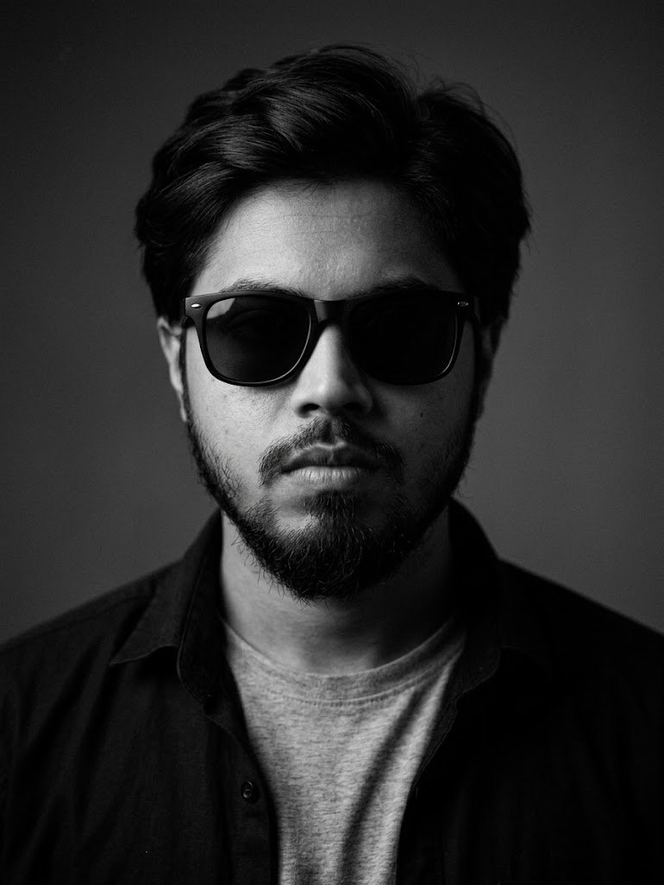

Dreamer.
I turn ideas into clear websites, tidy systems, and tools people actually use. Computer Science graduate from Barishal.

About
I'm a Computer Science and Engineering graduate from Barishal, and I like making technology feel simple for the people who use it.
I began by teaching web design and computer basics, then spent time looking after IT and day-to-day operations at a company. These days I plan software for local businesses, turning the way they already work into something clear to build.
I listen first, build the simplest thing that works, and keep refining it with the people using it.
Experience and education
-
January 2025 to October 2026
IT and office manager, Ankur Group
Looked after day-to-day IT and office operations.
-
January to November 2020
Trainer, Sheikh Kamal IT Training and Incubation Center
Taught web design, web development, and computer basics to new learners.
-
2017 to 2020
B.Sc. in Computer Science and Engineering
Global University Bangladesh. Graduated with a CGPA of 3.60.